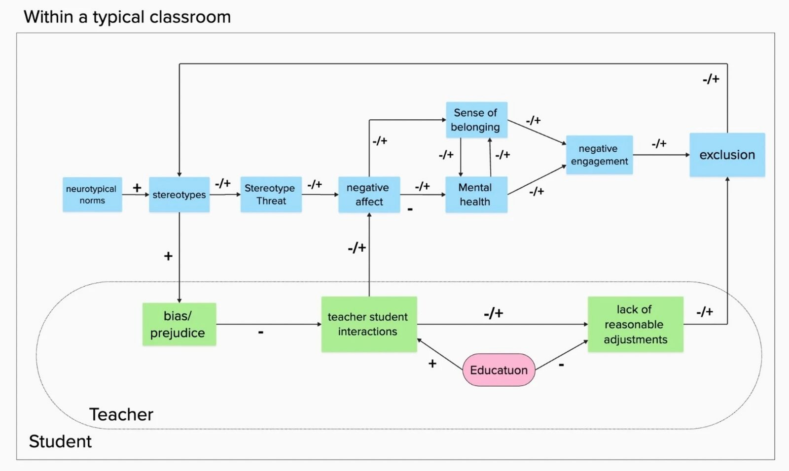
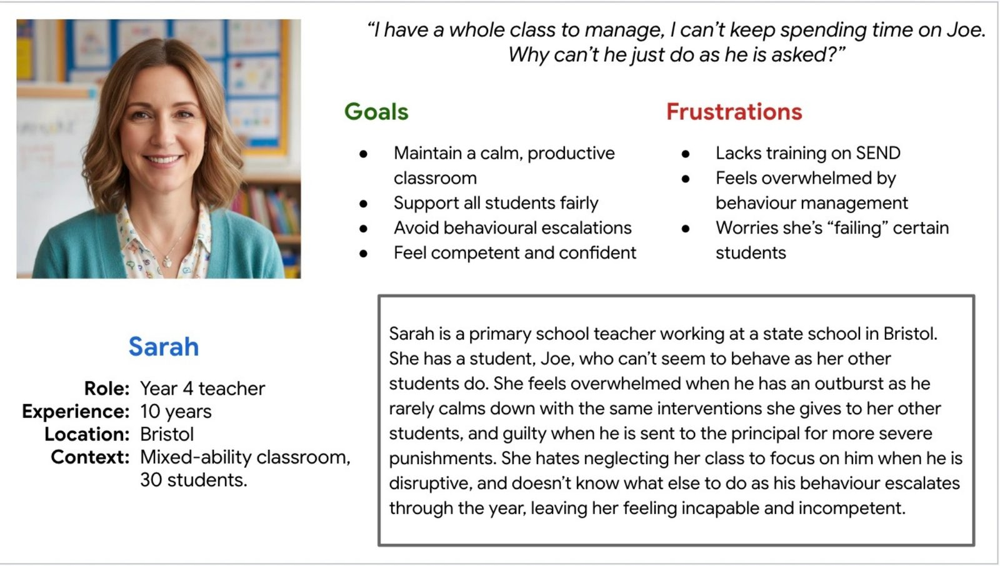
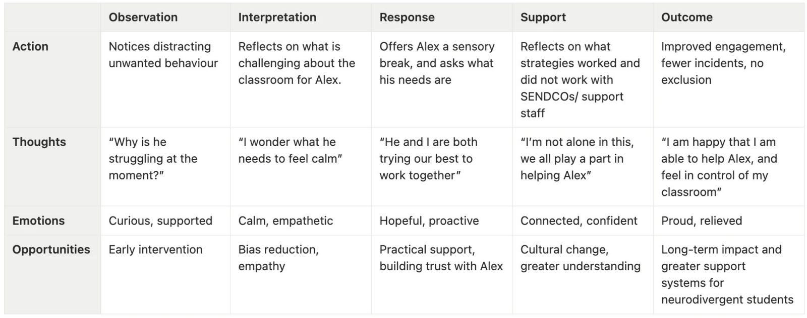

Zara Curtis
Zara CurtisA Systems-Thinking Approach to Reducing Student Exclusions
Reframing Neurodivergence In Schools — a translation of my BSc Psychology PATH (Problem, Analysis, Test, Help) model into a UX context.
Exclusion as a service failure, not a student failure
Unlike a traditional end-to-end digital product case study, this project applied behavioural mapping to reframe school exclusion as a failure of the system around a student, rather than a failure of the student themselves — creating actionable design artefacts to drive systemic change.
Excluded students face a higher likelihood of unemployment or NEET status, lower lifetime earnings, and dependence on social services. Exclusion itself is linked to anxiety, depression, chronic stress, disrupted routines and identity damage, and increased physical health risks.
Design goals
- Increase teacher confidence in supporting SEND students.
- Reduce bias and stereotype-driven interpretations of behaviour.
- Support reasonable, flexible classroom adjustments.
- Increase SEND students' sense of belonging and safety.
A literature review of 30+ sources
1. Neurotypical norming leads to stereotyping
Teachers unconsciously perpetuate behavioural norms that only represent neurotypical students, causing them to stereotype SEND students as deliberately defiant when they're actually overstimulated or overwhelmed.
2. Stereotyping alienates SEND students
Stereotyped students can start acting more in line with the stereotype, creating a vicious cycle that damages belonging, engagement, mental health, and academic attainment.
3. Teachers feel undertrained
Only 50% of teachers feel confident teaching SEND students — leading to misinterpretation of SEND-related behaviour as "choice" or "defiance" rather than need.
Core tension: SEND students give warning signs that they need support, which are misread by teachers and neurotypical peers alike — leaving no room for positive change.

Meet Sarah
I created a proto-persona, Sarah, derived from the literature, to externalise the internal pressures teachers face — visualising how cognitive load and a lack of SEND training can lead to unintentional bias in decision-making. Mapping her emotional and cognitive journey with a student, Joe, revealed the "breakdown points" that precede exclusion: Sarah feels out of control and stuck, and ends up punishing Joe because she doesn't have the tools to manage her classroom differently.

From insight to intervention: the PATH model
I synthesised the research into a PATH behavioural model mapping how targeted interventions would change student outcomes. Educating teachers can't change the norms or stereotypes they hold, but it can change how they interpret and respond to student behaviour.

Experiential SEND training
Temporary placements in special schools, observation of best practice, empathy-building through lived examples — giving Sarah practical experience to draw on.
Inclusive pedagogy workshops
Practical, classroom-ready strategies: sensory adjustments, alternative communication, flexible engagement — so Sarah knows how to support Joe and build trust with him.
"SEND Champion" model
Trained teachers act as peer mentors, knowledge-sharers, and advocates for inclusive practice — so teachers can turn to each other for guidance.
Sarah's journey after training
With experiential SEND training, inclusive pedagogy workshops, and SEND Champion support, Sarah is able to spot early warning signs, meet Joe with curiosity rather than frustration, and confidently offer breaks and support without expecting him to act like her other students. She can also inform future guidance to make sure Joe has a good experience in education — challenging neurotypical norms in her own classroom.
By improving teacher training and confidence: teacher bias and misattribution decrease, student–teacher relationships improve, belonging and mental health improve, engagement increases, and exclusion rates decrease.
Why this project mattered to me
I conducted this research and built the PATH model while working as a SEND Teaching Assistant and volunteering at ACORN Alternative Provision. My research and real-world experience in education taught me — both theoretically and practically — that school exclusion is rarely about student "failure," and much more about systemic gaps in teacher support and classroom design. Shifting the focus onto teachers surfaced practical interventions — training, inclusive pedagogy, and peer mentoring — that could improve both student wellbeing and teacher confidence.
Creating proto-personas and journey maps made the human impact feel tangible, showing how small changes in empathy, understanding, and support can prevent exclusion and foster belonging. This work reinforced that UX in education isn't just about tools — it's about designing for empathy, equity, and meaningful change.